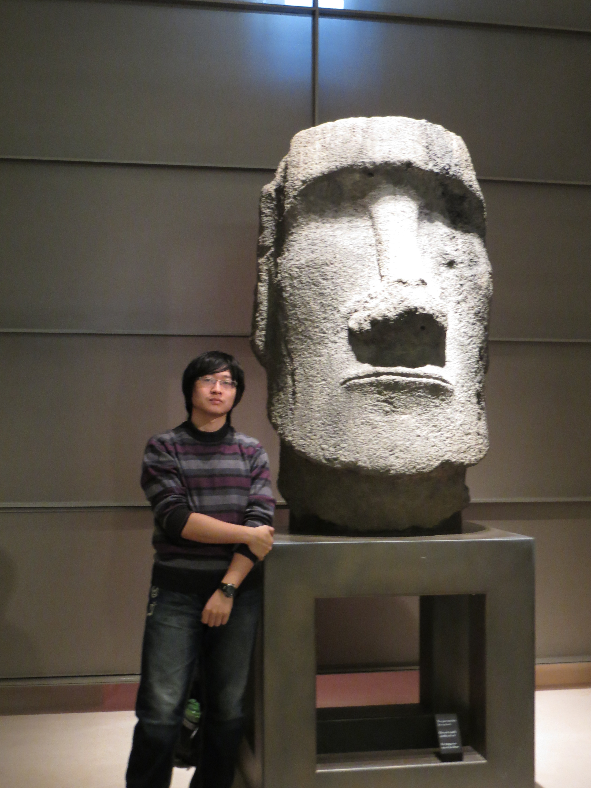

Nechadil

A proros
Bonjour, J’ai 23 ans et je suis actuellement en 3ième année d’école d’ingénieur à l’UTBM ( Université Technologique de Belfort-Montbéliard). Je suis en ce moment à la recherche d’un stage en tant qu’assistant ingénieur, afin de vous présenter mes compétences j’ai choisi d’utiliser un site personnel où vous pourrez retrouvez mes réalisations ainsi que mes connaissances dans les diverses domaines lié à la programmation.
Compétence
Web
-
HTML+CSS
- code source de ce site
( V1.0 HTML+CSS )
- code source de ce site
-
JavaScript
- lien d'un exercice/code source
( TUC_Studio: HTML+CSS+JavaScript )
- lien d'un exercice/code source
Programation
- Java
- C(La programmation système en C sous Linux)
Cursus
- 2015-2016-UTBM-Départment Informatique
- 2014-2015-INSA Lyon-Départment Génie Industriel
- 2012-2014-INSA Rouen-Départment STPI(Sciences et Technologies Pour l'Ingénieur)